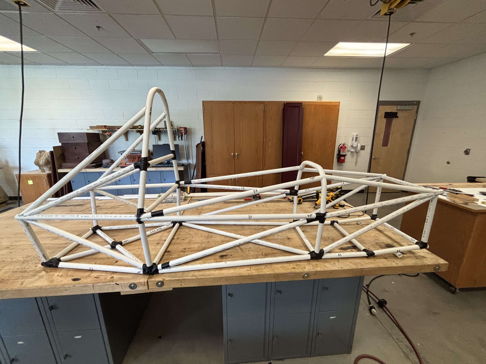
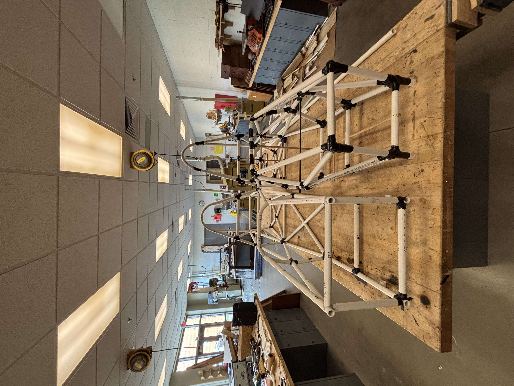
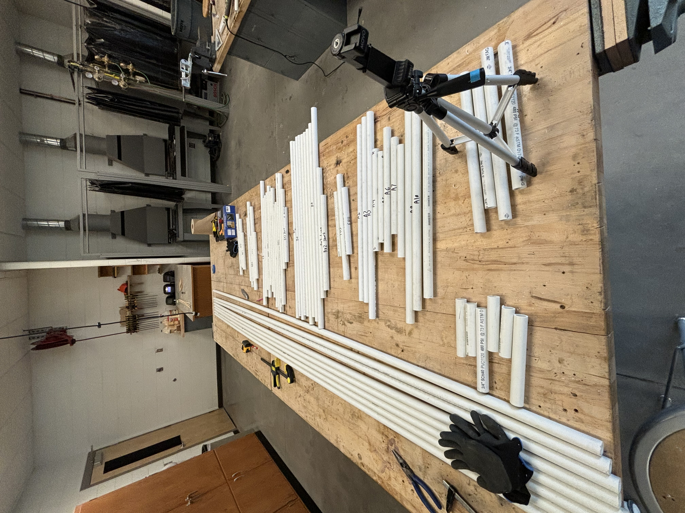

Structures · Formula SAE · Stage 2
PVC Chassis
Version 2
Overview
With the geometry issues from V1 documented and the CAD model updated accordingly, Version 2 was a full rebuild of the PVC mockup incorporating every correction from the first round. V2 served a dual purpose: confirming the revised geometry was sound, and acting as a direct fabrication reference — each member was labeled to match the cut list that would be used for the steel build.
Objectives
- Verify that all geometry corrections from the V1 review resolved the identified issues without introducing new ones.
- Lock the chassis geometry and use the physical mockup as the definitive reference for the steel cut list.
- Label all members on the mockup so the transition from PVC to steel fabrication was direct and unambiguous.
My Contributions
- Updated the Inventor CAD model with all corrections from the V1 review and generated a revised cut list.
- Rebuilt the full PVC mockup from scratch incorporating the updated geometry.
- Labeled every member on the physical mockup with its corresponding part number from the cut list, creating a direct bridge between the CAD model and fabrication.
- Conducted a final geometry sign-off review before clearing the design for steel fabrication.
Methods / Approach
The V2 build followed the same process as V1 but with stricter dimensional checks at each stage. After assembly, every critical dimension — frame length, width, roll hoop height, front bulkhead geometry, and diagonal member angles — was verified against the updated CAD model. Member labeling used a consistent numbering scheme matching the Inventor assembly tree, so any member could be located in both the physical mockup and the CAD simultaneously.
The completed V2 mockup was used as the final geometry sign-off before ordering steel stock, ensuring the material order exactly matched the validated geometry.
Results



- All geometry issues identified in V1 resolved and verified in the physical mockup.
- Every member labeled and cross-referenced to the cut list — fabrication could begin directly from the mockup.
- Design locked and steel stock order placed following final V2 sign-off.
Challenges and How I Solved Them
Carry-over errors. Correcting V1 geometry in CAD and then re-building created a risk of introducing new conflicts at joints that were previously fine. I mitigated this by reviewing every joint in the updated model before cutting, not just the ones that were changed.
Maintaining labeling consistency. With dozens of members, keeping physical labels matched to the CAD part tree required a deliberate system. I used a printed cut list taped to the workbench and checked off each member as it was labeled and installed.
What I Learned
- Iterating on a cheap prototype before committing to final materials is one of the highest-leverage things you can do in fabrication — V2 would have been impossible to execute as confidently without V1 first.
- A physical labeled mockup is more useful as a fabrication reference than a CAD printout alone — having the actual geometry in hand removes ambiguity about angles and member lengths.
- Design lock is a real discipline: once V2 was signed off, no further geometry changes were allowed, which kept fabrication on track.
Tools and Technologies
- Autodesk Inventor — CAD updates and revised cut list generation
- PVC pipe and connectors — refined full-scale prototype
- Tape measure, framing square — dimensional verification
- Cut list / parts tracking — member labeling and fabrication prep